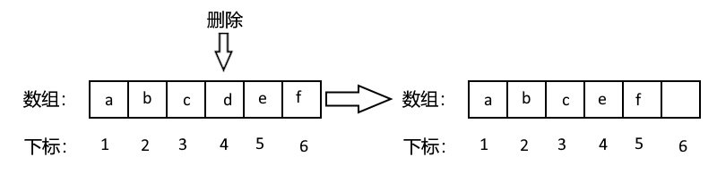

数组基础
写在前面：
数组是基本的的数据结构，非常重要，在写算法题时，几乎是必不可缺的。
数组是存放在连续内存空间上的相同类型数据的集合。
数组
顾名思义，是存放在连续内存空间上的相同类型数据的集合。
连续内存空间表明了其可以方便的使用下标引索的方式来获取数据，例如：
1 | |
这段代码的意义是：取数组arr中第一个([0])内存空间中的内容，并把他赋值为10。
值得注意的是：
- 数组下标都是从0开始的。
- 数组内存空间的地址是连续的
但是，明明取的是第一个值，为什么下标为0呢？
关于这个，在这不多做讨论，如有兴趣可以去看看我写的“差一错误”这篇文章。
所以我们在删除或者增添元素的时候，就要移动其他元素的地址，将后面的移动到前面，再更改数组的大小。
如图所示：

数组也分动态数组与静态数组。
静态数组就是大小不可变，固定大小的数组。
动态数组是运行时能自由扩展/收缩的数组，C++ 中主要通过 std::vector 实现。
代码示例：
1. 静态数组（固定大小）
静态数组大小不可变，但可通过逻辑覆盖模拟删除/插入。
1 | |
2. 动态数组（vector）
推荐使用 std::vector，自动管理内存。
1 | |
3. 区别
| 操作 | 静态数组 | vector |
|---|---|---|
| 删除元素 | 需手动移动元素，逻辑缩小 size |
vec.erase() 自动处理 |
| 插入元素 | 需手动移动元素，检查容量 | vec.insert() 自动扩容 |
| 内存管理 | 固定大小，需预分配 | 动态扩容，无需手动管理 |
注意:
- 静态数组：必须确保不越界（
size <= MAX_SIZE）。 - 动态数组：
erase()和insert()的时间复杂度为 O(n)。
结语：
数组是编程世界的基石，以连续内存和下标访问为核心，在效率与简洁之间找到平衡。
静态数组划定疆界，安全却固执；动态数组灵活伸缩，用空间换自由。
记住：
“数组教会我们的不仅是存储数据，更是如何在确定性与灵活性间寻找最优解——就像编程本身，是规则与创造的艺术。”